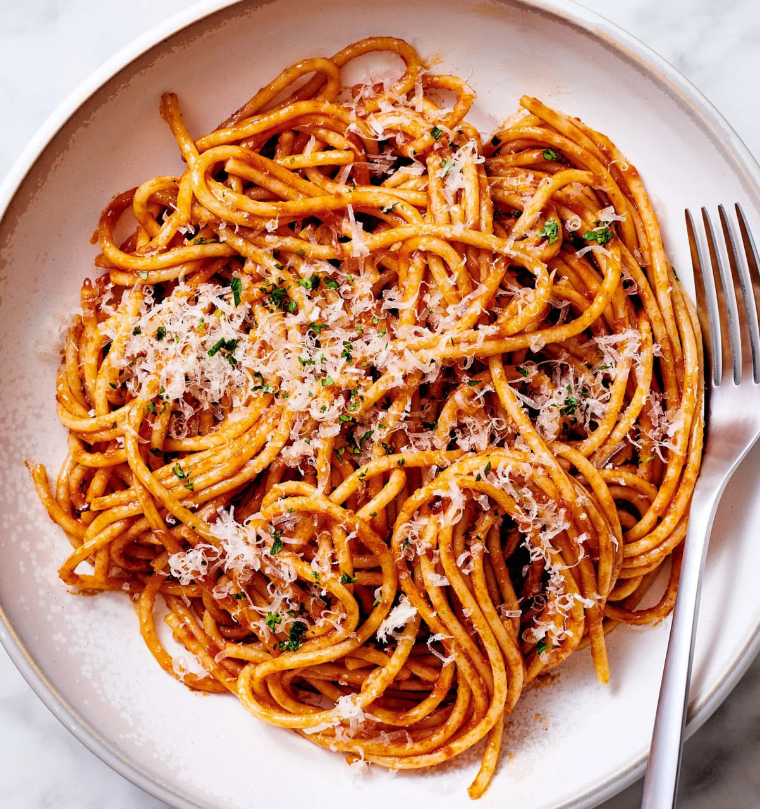
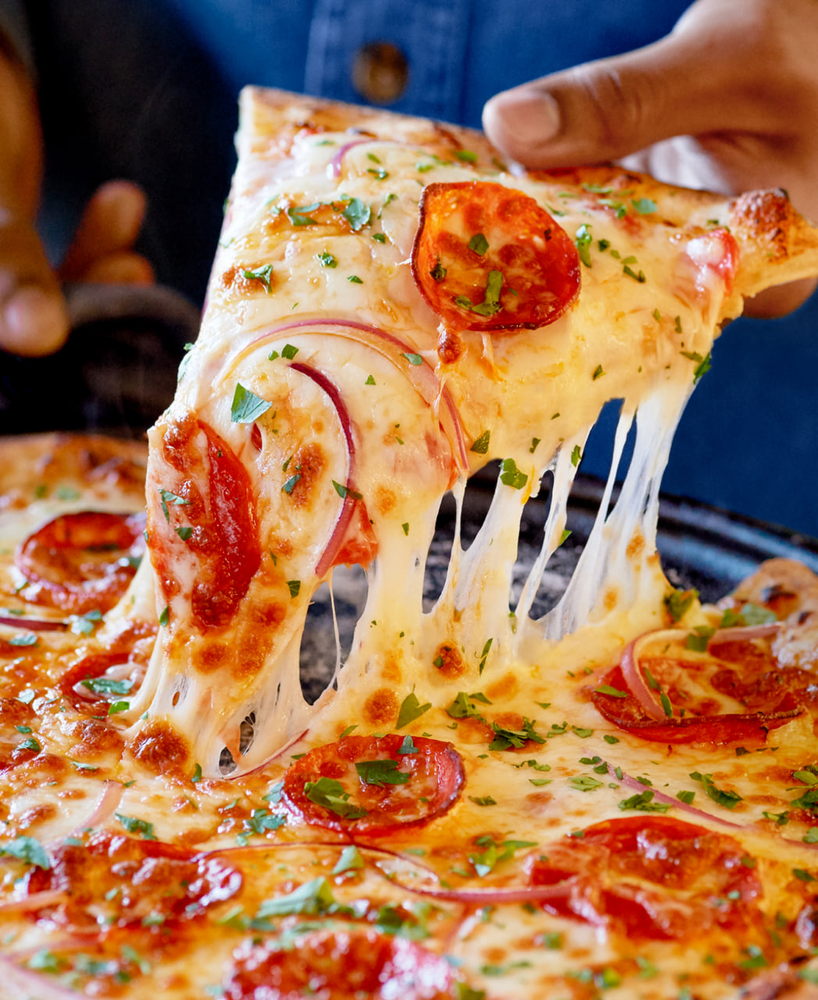

Pasta

Description
Pasta is a versatile Italian staple made from unleavened dough.
Ingredients:
- 1/2 lb spaghetti
- 2 tablespoons butter
- 2 teaspoons olive oil
- 4 cloves garlic, minced
- 3/4 cup heavy cream
- 1 cup grated Parmesan cheese
- 1 1/2 tablespoons dried parsley
- Salt and black pepper to taste
- Reserved pasta water (as needed)
Preparation Steps
- Boil Pasta: Cook spaghetti in boiling, salted water until al dente (tender yet firm to the bite), about 10-12 minutes.
- Reserve Water: Before draining, save about 1/2 cup of the starchy pasta water.
- Make Sauce: In a large pan, heat olive oil and butter over medium heat. Add garlic and sauté for 1-2 minutes until fragrant.
- Combine: Add the heavy cream, parmesan cheese, and dried parsley to the pan. Stir until the cheese melts and the sauce is smooth.
- Toss: Add the drained pasta to the sauce, tossing to coat. If the sauce is too thick, add the reserved pasta water a little at a time to reach the desired consistency.
- Serve: Season with extra salt and pepper if needed, and serve immediately with more Parmesan.
Bon Appetit!
Pizza

Description
Pizza is a popular Italian dish consisting of a flattened, leavened wheat-based dough base, typically topped with tomatoes, mozzarella cheese, and olive oil
Ingredients
1. Pizza Dough
- Flour: All-purpose flour or bread flour for a chewier crust.
- Yeast: Active dry or instant yeast.
- Water: Warm water.
- Salt: Essential for flavor.
- Olive Oil: Adds flavor and texture.
- Sugar: Helps activate yeast and browns the crust.
2. Sauce
- Tomato Sauce: Crushed tomatoes, passata, or tomato paste.
- Seasonings: Garlic powder, dried oregano, basil, salt, and black pepper.
- Alternative Sauces: Pesto, BBQ sauce, or white sauce.
3. Cheese
- Mozzarella: Low-moisture (shredded) for melting, or fresh mozzarella.
- Other Options: Parmesan, Provolone, Fontina, or Goat cheese.
4. Popular Toppings
- Meats: Pepperoni, Italian sausage, bacon, ham, chicken, or ground beef.
- Vegetables: Mushrooms, onions, bell peppers, olives, spinach, tomatoes, and arugula.
- Other: Pineapple, jalapeños, and fresh basil.
Preparation Steps
- Prepare the Dough: Mix warm water, sugar, and yeast; let it sit until foamy. Combine with flour, salt, and olive oil, then knead for 5-7 minutes until smooth.
- Rise: Place the dough in a greased bowl, cover it, and let it rise for 60–90 minutes until doubled in size.
- Preheat Oven: Preheat your oven to its highest temperature, Place a pizza stone or heavy baking sheet inside to get hot.
- Place a pizza stone or heavy baking sheet inside to get hot.
- Shape the Dough: On a floured surface, stretch or roll the dough into a 10-12 inch circle, leaving the edges slightly thicker.
- Add Toppings: Place dough on parchment paper or a pizza peel dusted with semolina flour. Spread a thin layer of sauce, followed by mozzarella cheese and your desired toppings.
- Bake: Slide the pizza onto the hot stone/tray in the oven. Bake for 8-12 minutes until the crust is golden and the cheese is bubbly.
Bon Appetit!